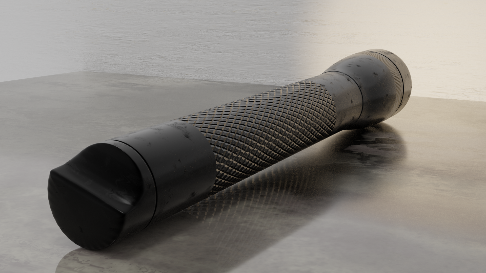

MTORIALS
DEVELOPMENT - 3D DESIGN - MUSIC
MT32.NET
THIS IS MY BLOG!
MT32.NET IS WHERE I PUBLISH MOSTLY CUMPUTER RELATED POSTS. YOU CAN READ ABOUT LINUX, WEB DEV, ELECTRONICS AND MORE. THERE ARE ALSO ARTICLES WRITTEN BY OTHERS WITH SIMILAR INTERESTS.
ONE OF THE GOULS OF THIS BLOG IS TO NEVER BOTHER WITH THE SAME PROBLEM TWICE. SO WHENEVER I ENCOUNTER SOME TRICKY FIX, I WILL PUT IT ON THERE.
GO TO MT32.NET
DEVELOPMENT
DIAL-PHONE
THIS IS MY BLOG!
MT32.NET IS WHERE I PUBLISH MOSTLY CUMPUTER RELATED POSTS. YOU CAN READ ABOUT LINUX, WEB DEV, ELECTRONICS AND MORE. THERE ARE ALSO ARTICLES WRITTEN BY OTHERS WITH SIMILAR INTERESTS.
ONE OF THE GOULS OF THIS BLOG IS TO NEVER BOTHER WITH THE SAME PROBLEM TWICE. SO WHENEVER I ENCOUNTER SOME TRICKY FIX, I WILL PUT IT ON THERE.
CHECKOUT THE GITHUB
PROGEN
THIS IS MY BLOG!
MT32.NET IS WHERE I PUBLISH MOSTLY CUMPUTER RELATED POSTS. YOU CAN READ ABOUT LINUX, WEB DEV, ELECTRONICS AND MORE. THERE ARE ALSO ARTICLES WRITTEN BY OTHERS WITH SIMILAR INTERESTS.
ONE OF THE GOULS OF THIS BLOG IS TO NEVER BOTHER WITH THE SAME PROBLEM TWICE. SO WHENEVER I ENCOUNTER SOME TRICKY FIX, I WILL PUT IT ON THERE.
THE PROGEN WEBSITE
3D DESIGN
AUDIO INTERFACE
THIS IS AN AUDIO INTERACE I MADE IN BLENDER. WHY? BECAUSE IT HAS MANY KNOBS!

MACLIGHT
THIS IS A FLASH LITE. IT HAS A PRETTY NEAT LOOKING DESIGN, SO I RECREATED IT IN SOFTWARE.
MILAN METRO
THIS IS A RECREATION OF A PHOTO BY
PAUL NEITMANN
.
IT SHOWS THE MILAN SUBWAY LINE 1 AND IS A TIME EXPOSURE SO YOU CAN SEE THE MOTION OF THE SUBWAY.